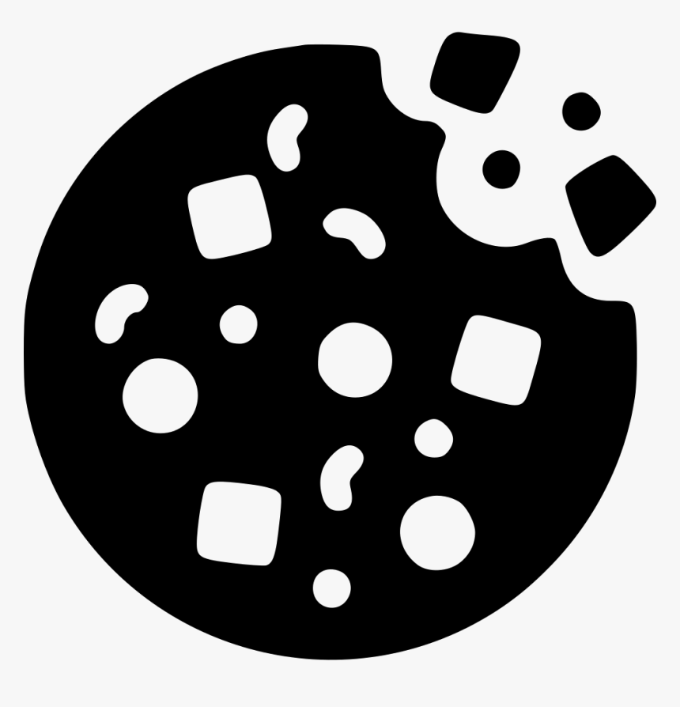
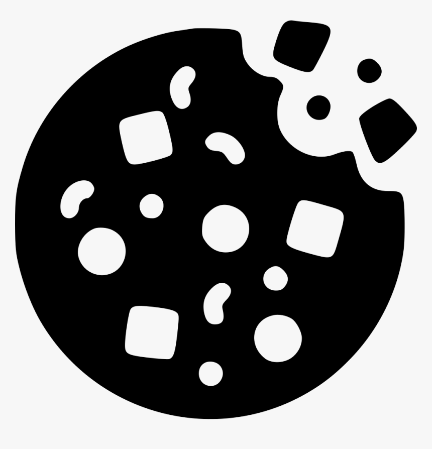

Receita Cookie Integral / Modo de Preparo
 HOME
|

Ingredientes da receita
HOME
|

Ingredientes da receita
Modo de Preparo:
- Misture os igredientes líquidos em uma batedeira por 5 minutos
- Misture os igredientes secos em uma tigela separada
- Após os líquidos estarem homogêneos, coloque a mistura na tigela com os secos
- Misture tudo
- Unte uma forma com manteiga ou margarina
- Faça bolinhas com a massa e coloque na forma untada
- Coloque para assar no forno por entorno de 15 minutos
Deseja acessar outras receitas como esta? Clique aqui
Copyright by Jaeger E.S. | © 2022